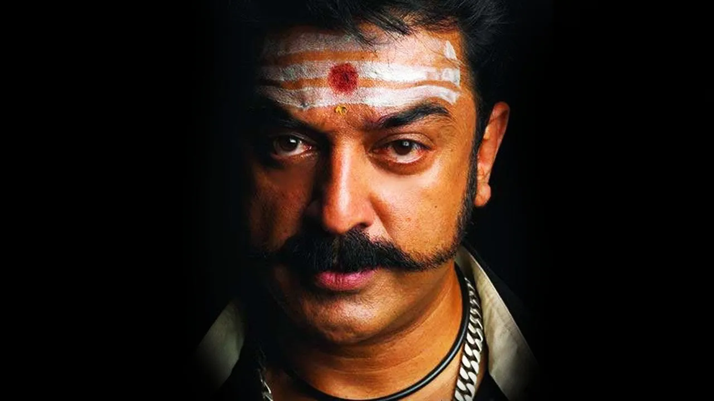
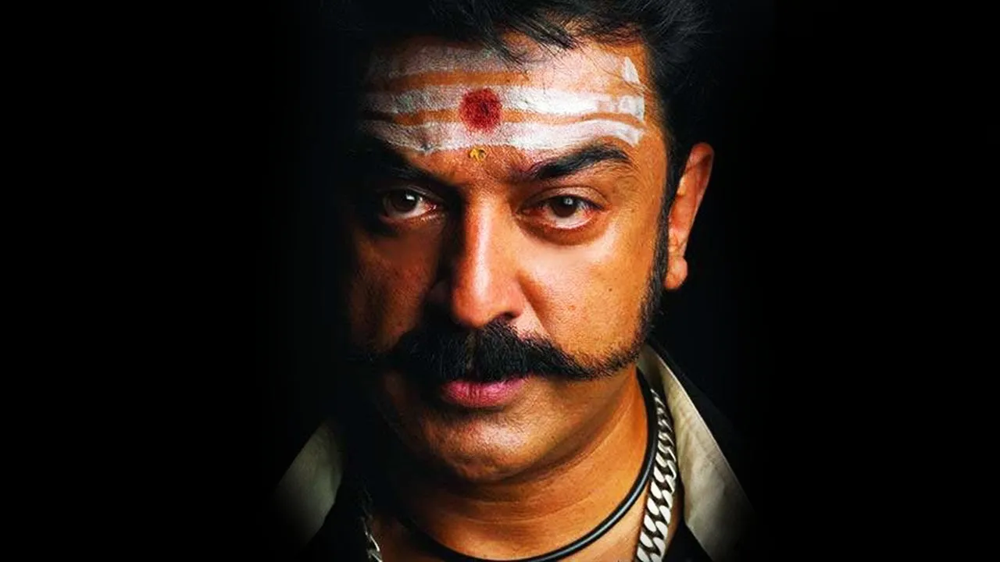
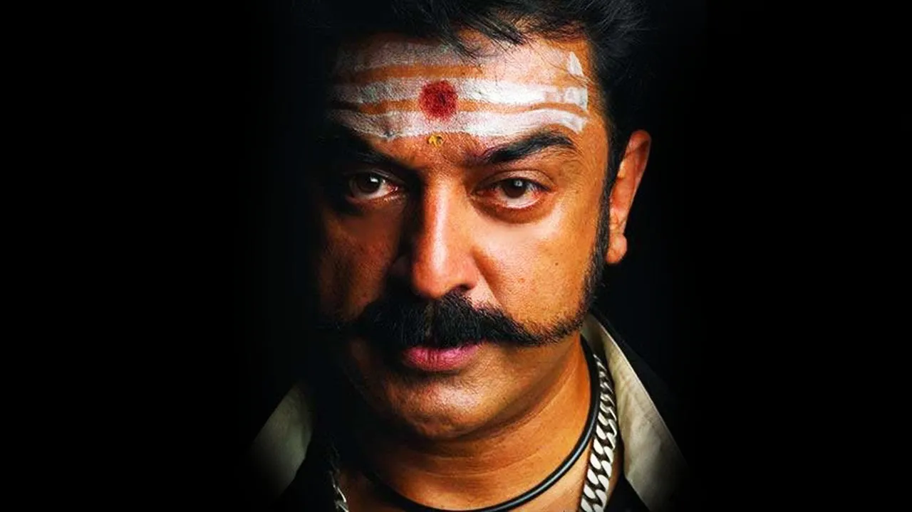
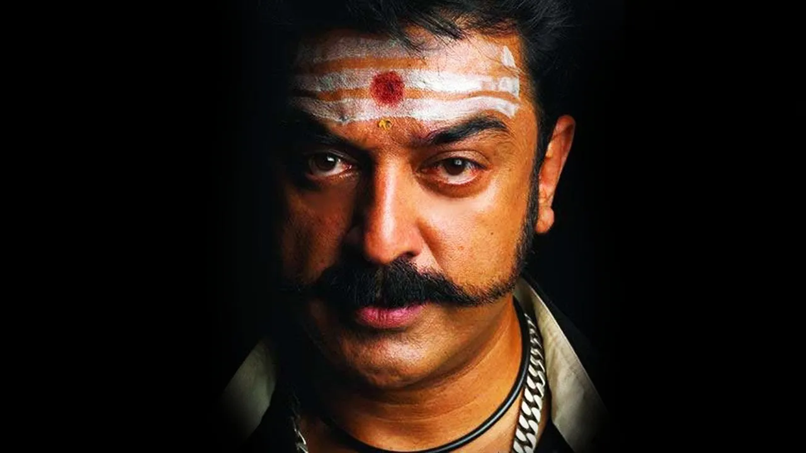

Kamal Haasan (born Parthasarathy Srinivasan on 7 November 1954)[4] is an Indian actor, filmmaker, screenwriter, playback singer, television presenter, social activist and politician who works mainly in Tamil cinema. Besides Tamil, he has also appeared in some Malayalam, Hindi, Telugu, Kannada and Bengali films. He is one of the greatest actors in the history of Indian cinema. Haasan is also known for introducing many new technologies and cosmetics to the Indian film industry.[5][6][7] He has won numerous accolades, including Four National Film Awards, Nine Tamil Nadu State Film Awards, Four Nandi Awards, One Rashtrapati Award, Two Filmfare Awards and 17 Filmfare Awards South. He was awarded the Kalaimamani Award in 1984, the Padma Shri in 1990, the Padma Bhushan in 2014 and the Ordre des Arts et des Lettres (Chevalier) in 2016.[8]
Haasan started his career as a child artist in the 1960 Tamil film Kalathur Kannamma, for which he won the President's Gold Medal. His breakthrough as a lead actor came in the 1975 drama Apoorva Raagangal, directed by K. Balachander, in which he played a rebellious youth who falls in love with an older woman. He won his first National Film Award for his portrayal of a guileless school teacher who cares for a woman who suffers from retrograde amnesia in Moondram Pirai (1982). He further gained immense acclaim for his performances in Sagara Sangamam (1983), Swathi Muthyam (1986), Nayakan (1987), Pushpaka Vimana (1987), Sathyaa (1988), Apoorva Sagodharargal (1989), Gunaa (1991), Thevar Magan (1992), Nammavar (1994), Mahanadhi (1994), Indian (1996), Hey Ram (2000), Aalavandhan (2001), Anbe Sivam (2003), Virumaandi (2004), Vettaiyadu Villaiyadu (2006), Dasavathaaram (2008), in which he played ten roles, Vishwaroopam (2013), and Vikram (2022). His production company, Raaj Kamal Films International, has produced several of his films.